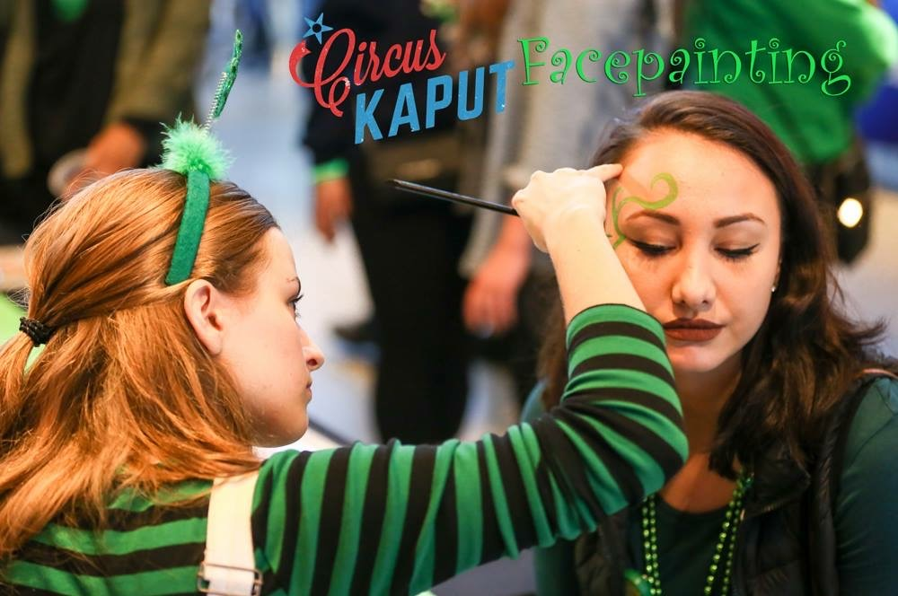
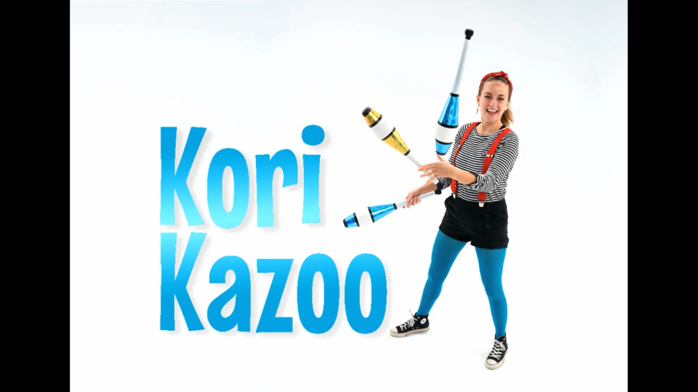

Face Painting
Demanding kids and cranky parents might be a deterent for most, but I say "Bring it on!" Turning someone's face into a work of art is an absolute joy for me, and it just so happens people are willing to pay for it too! Don't worry, this skill is on hold at the moment - it is definitly not Covid friendly!
Unicycling
It's harder than it looks! I'm still working on it, but one day I'll be a unicycling pro.
Hula Hooping

Honestly, this hobby was not in the plans, but has totally paid off. I stroll around at an event and show off my moves, usually as a hooping witch or a hooping sugarplum fairy.
Juggling
The OG - I've been juggling for about seven years now. I love it! I have a whole group of juggling friends and we get together and pass clubs in large, intracate formations.
Odds and Ends

Ocasionally I'll pick up a random skill for a specific event or show. These odds and ends include basic magic(I'm the worst at it), bullwhip, character impersonations, henna, etc.